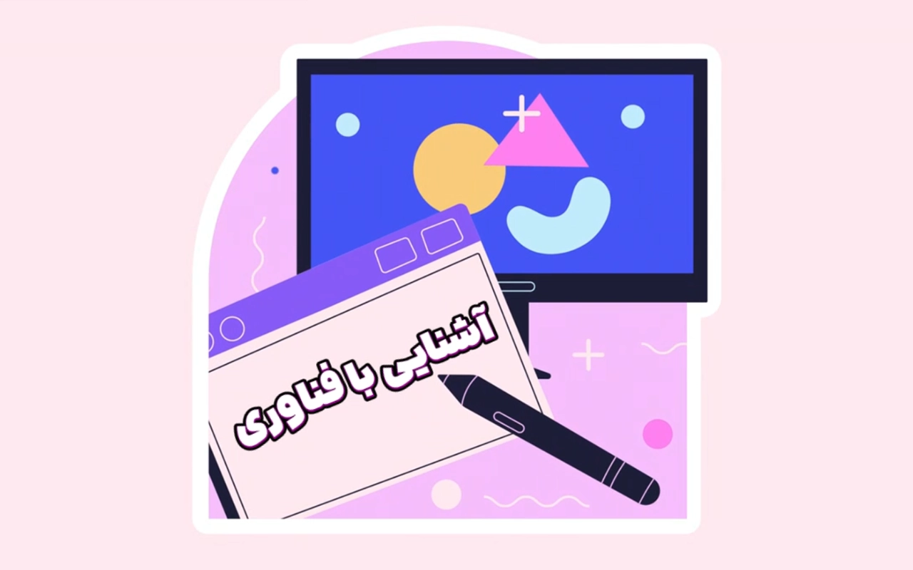
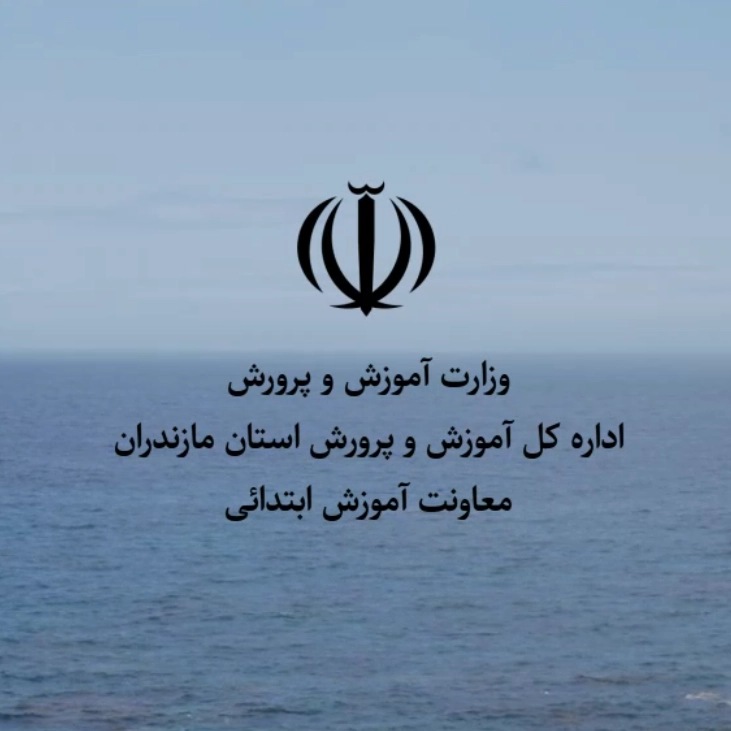
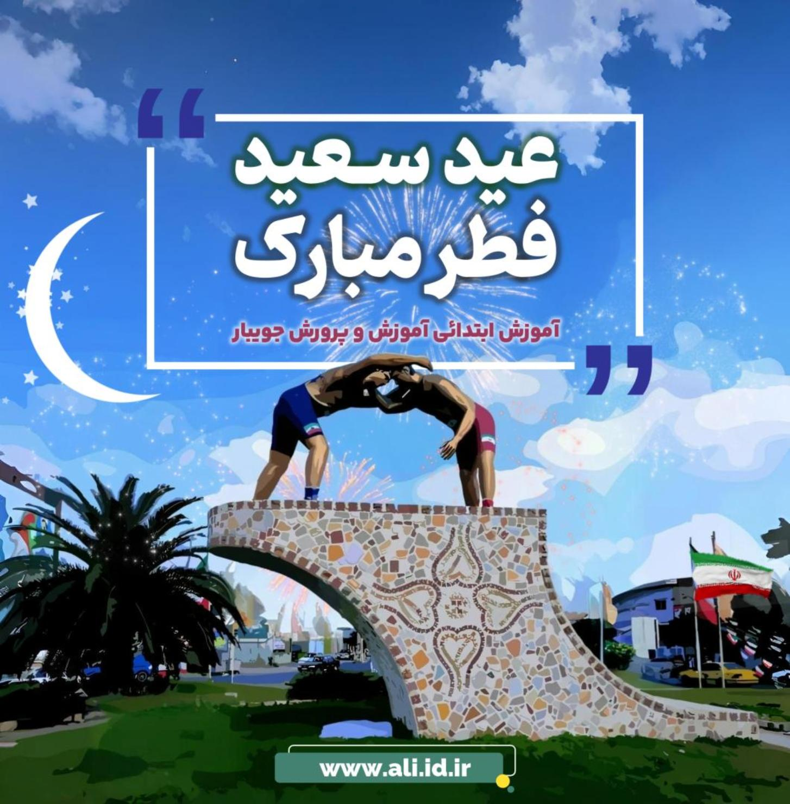
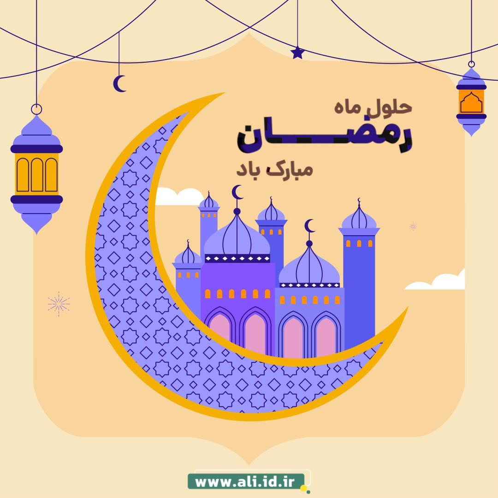
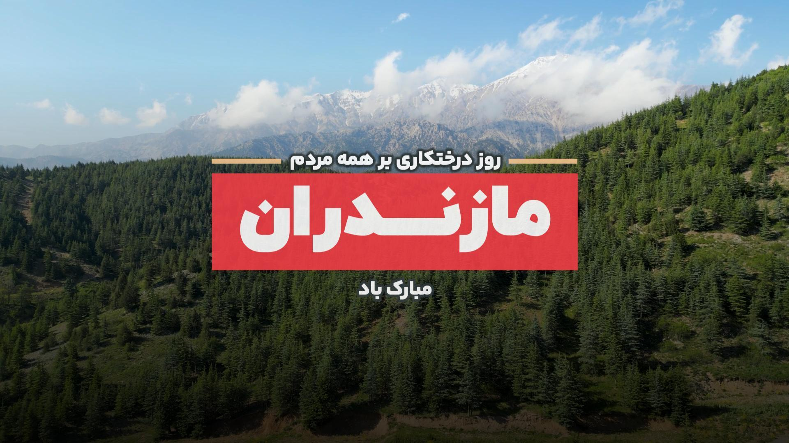

ابزارهایی که یک معلم برای کلاس خودش ساخته
من علی یعقوبیام، معلم ابتدایی و توسعهدهندهٔ وب. اینجا کاربرگساز، آزمونک، بازی و ابزارهای کلاسیام را پیدا میکنید، و برای سازمانها وباپ و ویدیو میسازم.
۱۷ ابزار و ۱۲ نمونهٔ چندرسانهای. همه در مرورگر باز میشوند و نصب نمیخواهند.
ابزارها
هر ابزار در تب تازه باز میشود. رنگ برگهٔ بالای هر کارت، درس یا حوزهٔ آن را نشان میدهد.
۱۹ ابزار
کتابها و جزوههای آموزشی
مجموعه ۶ عنوان کتابچه و جزوه آموزشی تالیفی (فارسی، ریاضی، هدیهها، مطالعات و بودجهبندی) با دانلود رایگان.
ورود به کتابخانه ریاضی جدیدسرزمین کسرها
بازی و تمرین کسر برای ریاضی سوم، با فرمولهای درستنوشته و محیطی کودکانه.
اجرای ابزار ریاضی جدیدسرزمین کسرها (پایه ششم)
یادآوری جامع کسرهای سوم، چهارم و پنجم، ویژه ورودی و پایهٔ ششم با آموزش تعاملی.
اجرای ابزار فارسی جدیدکاربرگساز املای فارسی
کاربرگ و آزمون املای فارسی پایههای چهارم تا ششم، آمادهٔ چاپ روی A4.
اجرای ابزار وب و رسانه جدیدبررسی IP و نشت WebRTC / DNS
آیپی عمومی، شرکت ارائهدهنده و وضعیت پروکسی را ببینید و نشت WebRTC و DNS را بررسی کنید.
اجرای ابزار مدرسه و کلاس محبوب معلمانسامانه کارنامهساز
ثبت ارزشیابی توصیفی و چاپ کارنامه با قالب استاندارد آموزش و پرورش.
اجرای ابزار مدرسه و کلاستولید آزمونک دبستان
آزمونک درسبهدرس برای هدیههای آسمانی، مطالعات اجتماعی و علوم پایههای چهارم تا ششم.
اجرای ابزار فارسیکاربرگ جایخالی فارسی چهارم
کاربرگ جایخالی از متنهای فارسی چهارم، با فونت پینار و آمادهٔ چاپ.
اجرای ابزار فارسیبازی حدس کلمه
حدس کلمهٔ فارسی با سطحهای مختلف و افکت صوتی.
اجرای بازی ریاضیتدریس میلیارد، بدون سردرد
میلیارد را در فضای سهبعدی ببینید و با یکان، هزار و میلیون مقایسه کنید.
اجرای ابزار مدرسه و کلاسپرتال دبستان شهید قائمی
پیوندها و ابزارهای کلاسی دبستان شهید قائمی پایینرودپشت در یک جا.
ورود به پرتال مدرسه و کلاسگردونهٔ شانس کلاسی
قرعهکشی نام دانشآموزان برای پرسش و مشارکت عادلانه در کلاس.
چرخاندن گردونه ریاضیبازی ضرب سریع
چالش رکوردی جدول ضرب؛ سریعتر جواب بده و رکورد را بشکن.
شروع بازی فارسیآزمونک کلمات فارسی
آزمون کوتاه معنی واژههای کتابهای فارسی دبستان.
شروع آزمونک وب و رسانهتولید فایل معیوب
فایل خراب با پسوند و حجم دلخواه بسازید تا آپلودر و اعتبارسنجی سامانهتان را آزمایش کنید.
اجرای ابزار وب و رسانهساخت پست استانداری مازندران
کاور، پست و اطلاعیه با هویت بصری استانداری مازندران، آماده در چند ثانیه.
اجرای ابزار مدرسه و کلاسابزارک ویدیوپروژکتور
تایمر، تختهٔ تعاملی و ابزارکهای دیگر برای نمایش روی ویدیوپروژکتور کلاس.
باز کردن در گیتهاب مدرسه و کلاسسامانه پوشهٔ کار
ساخت و مدیریت پوشهٔ کار و مستندات پیشرفت تحصیلی دانشآموزان.
باز کردن در گیتهاب ریاضیبازی نجات آدمفضایی
با تعیین نقطهها در دستگاه مختصات، آدمفضایی را نجات بده.
شروع بازیابزاری پیدا نشد
عبارت کوتاهتری بنویسید یا فیلترها را بردارید.
کتابها و جزوههای آموزشی تالیف علی یعقوبی
گزیدهای از کتابچههای راهنمای درسبهدرس، کاربرگهای استاندارد امتحانی و جدول زمانبندی بودجهبندی سالانه دوره ابتدایی؛ همراه با امکان مطالعه آنلاین و دریافت رایگان در قالب فایل PDF.
کتابچه جامع فارسی ششم
واژهنامه تخصصی، معنی روان اشعار و عبارات، آرایههای ادبی، نکات دستوری و درک مطلب درسبهدرس.
کتابچه جامع فارسی چهارم
معنی واژگان، اشعار، کلمات همخانواده، مخالف، نکات نگارشی و دستوری منطبق با کتاب درسی.
کاربرگ و آزمونک ریاضی ششم
مجموعه سوالات استاندارد فصل اول (کسر و محاسبات)، نمونه آزمونکهای کلاسی و تثبیت مفاهیم.
پرسش و پاسخ هدیهها ششم
بانک جامع سوالات متن و تمرینهای درس ۱ تا ۹ هدیههای آسمانی با پاسخهای تشریحی و کامل.
سوال و جواب مطالعات ششم
پوشش درسبهدرس تمامی مباحث و سوالات تالیفی بخش اول کتاب برای آمادگی آزمونهای کلاسی.
جدول بودجهبندی سالانه دروس
تقویم زمانی تدریس ماهانه و هفتگی کتب درسی دوره ابتدایی ویژه معلمان و مدیران مدارس.
نمونهکارها
تیزر و موشنگرافیک، ویدیوی آموزشی و سامانههایی که برای سازمانها ساختهام. یکی را انتخاب کنید تا در صحنهٔ بزرگ باز شود.
تیزر اول کتاب نونگاشت کار و فناوری
تیزر موشنگرافیک معرفی کتاب نونگاشت کار و فناوری، رویکردهای نوین مهارتی و تدریس عملی.
تیزر و موشنگرافیک
- تیزر اول کار و فناوریویدیو تیزر اول کار و فناوریموشنگرافیک
-
تیزر دوم کار و فناوری

ویدیو تیزر دوم کار و فناوریموشنگرافیک -
تیزر سوم کار و فناوری

ویدیو تیزر سوم کار و فناوریموشنگرافیک -
عید سعید فطر

ویدیو عید سعید فطرمناسبتی -
ماه مبارک رمضان

ویدیو ماه مبارک رمضانمناسبتی -
روز درختکاری

ویدیو روز درختکاریفرهنگی - خدمات و مهارتهاویدیو خدمات و مهارتهامعرفی
ویدیوی آموزشی
سامانه و گرافیک


همهچیز از نیاز کلاس شروع شد
من معلم ابتداییام و به برنامهنویسی و طراحی چندرسانهای علاقه دارم. تلاش کردهام نیاز واقعی کلاسها و معلمان را بشناسم و ابزاری بسازم که یادگیری را برای بچهها شیرین کند و بار کاری معلم را سبکتر.
ابزارهای این صفحه در خود مرورگر کار میکنند و به سرور خارجی وابسته نیستند؛ برای همین سریع و پایدار باز میشوند.
- تولید محتوای آموزشیکاربرگساز، آزمونک و شبیهسازها
- توسعهٔ وب کلاینتسایدHTML5، CSS مدرن و جاوااسکریپت
- موشنگرافیک و تدوینتیزرهای آموزشی، تبلیغاتی و انیمیشن
- امنیت و ابزارهای شبکهبررسی اتصال، نشت و حریم خصوصی
برای مدرسه یا سازمانتان ابزار میسازم
اگر ابزار آموزشی، وباپ یا ویدیوی تبلیغاتی لازم دارید، تماس بگیرید یا در پیامرسانها پیام بدهید. برای پروژههای آموزشی، وب و تولید محتوا آمادهٔ همکاریام.